数据导入最容易忽略的十个细节
数据导入是使用 DolphinDB 的重要一环。无论是从磁盘文件（如 csv 文件、txt 文件等）导入数据，还是使用插件从其他来源导入，如果忽略了一些操作细节，会导致导入失败或导入结果不符合预期。
本文将介绍使用 DolphinDB 进行数据导入时，最容易忽略的 10 个细节，涉及了数据格式、数据类型、导入速率、数据预处理、连接失败、分区冲突等方面，并给出了正确的解决方案，一起来看看吧。
1. 表头包含数字时的文件导入技巧
loadText 和 ploadText 是使用 DolphinDB 导入文本文件时最常使用的函数。但由于 DolphinDB 中列名必须以中文或英文字母开头，对于以数字开头的表头，loadText 和 ploadText 函数的处理规则如下：
- 不指定 containHeader 时，导入文本文件时将以字符串格式读取第一行数据，并根据该数据解析列名。但如果文件第一行记录中某列记录以数字开头，那么加载文件时系统会使用 col0, col1, … 等作为列名。
- 指定 containHeader = true 时，系统将第一行数据视为标题行，并解析出列名。如果文件第一行记录中某列记录以数字开头，那么加载文件时系统会使用 “c” 加列名作为列名。
如果忽略该细节，可能导致导入结果的列名不符合预期。
如导入下面的 colName.csv，有列名以数字开头，原始结构如下：
| id | name | totalSale | 2023Q1 | 2023Q2 | 2023Q3 |
|---|---|---|---|---|---|
| 1 | shirt | 8000 | 2000 | 3000 | 3000 |
| 2 | skirt | 10000 | 2000 | 5000 | 3000 |
| 3 | hat | 2000 | 1000 | 300 | 700 |
1.1. 错误操作
不指定 containHeader 时，系统将会使用 col0, col1, … 等作为列名。
执行 loadText("/xxx/colName.csv")，导入结果如下：
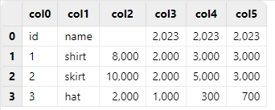
需要注意的是，由于 col0 和 col1 可以被视作一组具有离散值的变量，符合枚举类型的特征，被默认解析为 SYMBOL 类型；而 col2 - col5 这几列数据都是整数形式，被默认解析为 INT 类型，因此 col2 原本的列名 totalSale 无法写入该列，为空；col3 - col5 原本的列名只保留了开头可以解析为数字的 2023 部分。
1.2. 正确操作
指定 containHeader = true 时，系统会使用 “c” 加列名作为数字开头列的列名。
执行 loadText("/xxx/colName.csv", containHeader = true)，导入结果如下：
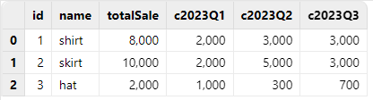
对于数字开头的列名，指定 containHeader = true，可以保证数据完整性，仅在列名前添加字符 “c”，是目前最佳的解决方案。因此，当使用 loadText 函数导入的文本文件表头有列名以数字开头时，应该指定 containHeader = true。
2. 自动解析数据类型的导入技巧
loadText、ploadText 和 loadTextEx 函数都提供了 schema 参数，用于传入一个表对象，以指定各字段的数据类型，并照此类型来加载数据。使用 loadText、ploadText 和 loadTextEx 函数时，如果用户不指定 schema 参数，会对数据文件进行随机抽样，并基于样本决定每列的数据类型。
由于自动解析数据类型的方法是对数据文件进行随机抽样，因此不一定每次都能准确决定各列的数据类型。为此，DolphinDB 提供了 extractTextSchema 函数，能够查看 DolphinDB 对数据文件进行自动解析数据类型的结果。在导入数据前，建议使用 extractTextSchema 确认对数据类型的自动解析结果；如果自动解析结果不符合预期，可以修改对应类型，并将修改后的表作为 loadText、ploadText 和 loadTextEx 的 schema 参数，再进行数据导入。
如导入下面的 type.csv，原始结构如下：
| id | ticker | price |
|---|---|---|
| 1 | 300001 | 25.80 |
| 2 | 300002 | 6.85 |
| 3 | 300003 | 7.19 |
2.1. 错误操作
执行 loadText("/xxx/type.csv")，导入结果如下：
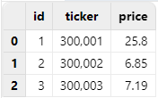
执行 extractTextSchema("/xxx/type.csv")，可以看到，ticker 列被默认解析为 INT 类型，不符合预期：
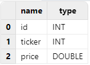
2.2. 正确操作
可以使用 extractTextSchema 函数先得到自动解析结果，再将 ticker 列的类型指定为 SYMBOL 类型，并用修改后的结果作为 loadText 函数的 schema 参数值进行导入，即可得到预期结果：
schema = extractTextSchema("/xxx/type.csv")
update schema set type =`SYMBOL where name = "ticker"
loadText("/xxx/type.csv", schema=schema)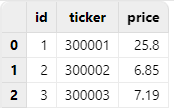
3. 日期与时间格式数据的手动导入方法
使用 loadText 函数导入符合日期、时间格式的数据时，如果用户不指定 schema 参数，会将符合日期、时间格式的数据优先解析为对应类型。规则如下：
- 当加载的数据文件中包含了表达日期、时间的数据时，满足分隔符要求的这部分数据（日期数据分隔符包含 ”-”、”/” 和 ”.”，时间数据分隔符为 ”:”）会解析为相应的类型。例如，”12:34:56” 解析为 SECOND 类型；”23.04.10” 解析为 DATE 类型。
- 对于不包含分隔符的数据，形如 ”yyMMdd” 的数据同时满足 0<=yy<=99，0<=MM<=12，1<=dd<=31 的条件时，会被优先解析成 DATE 类型；形如 ”yyyyMMdd” 的数据同时满足 1900<=yyyy<=2100，0<=MM<=12，1<=dd<=31 的条件时，会被优先解析成 DATE 类型。
如导入下面的 notdate.csv，原始结构如下：
| id | ticker | price |
|---|---|---|
| 1 | 111011 | 133.950 |
| 2 | 111012 | 125.145 |
| 3 | 111013 | 113.240 |
3.1. 错误操作
直接使用 loadText 函数导入 DolphinDB，由于 ticker 列是形如 "yyMMdd" 的数据，且同时满足 0<=yy<=99，0<=MM<=12，1<=dd<=31 的条件，会被优先解析成 DATE 类型。
执行 loadText("/xxx/notdate.csv")，导入结果如下：
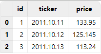
3.2. 正确操作
导入此类符合日期、时间格式的数据时，无需使用 extractTextSchema 函数查看自动解析结果，可提前在 schema 参数中将 ticker 列指定解析为 SYMBOL 类型，再进行导入，即可得到预期结果。
执行如下代码：
schema = table(`id`ticker`price as name, `INT`SYMBOL`DOUBLE as type)
loadText("/xxx/notdate.csv", schema = schema)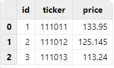
4. 提升数据导入效率的 loadTextEx 函数使用建议
在一些实际应用场景中，用户导入数据文件的下一步，都是将其写入分布式数据库进行存储，而不需要在内存中进行额外操作。DolphinDB 为此提供了 loadTextEx 函数，能够直接把数据文件入库，不需要把数据加载到内存表，既简化了步骤，又节省了时间。
如导入下面的 data.csv，原始结构如下：
| ID | date | vol |
|---|---|---|
| 23 | 2023.08.08 | 34.461863990873098 |
| 27 | 2023.08.08 | 4.043174418620766 |
| 36 | 2023.08.08 | 5.356599518563599 |
| 98 | 2023.08.09 | 5.630887264851481 |
| … | … | … |
4.1. 初级操作
如果先使用 loadText 函数把该文件加载到内存，再写入数据库，耗时 771.618ms。
timer{
t = loadText("/xxx/data.csv")
loadTable("dfs://test_load","data").append!(t)
}
>> Time elapsed: 771.618ms4.2. 进阶操作
直接使用 loadTextEx 函数将该文件入库，耗时 384.097ms。
timer{
loadTextEx(database("dfs://test_load"), "data", "date", "/xxx/data.csv", sortColumns=`id)
}
>> Time elapsed: 384.097ms数据量越大，两种方式的耗时差异越明显。
5. 在 loadTextEx 中使用 transform 参数预处理数据
在一些实际应用场景中，用户既希望能够使用 loadTextEx 函数直接把数据入库，又希望能够对数据做一些简单处理。针对这种需求，可以在 loadTextEx 中使用 transform 参数，对数据进行处理后再入库。这种做法无需把数据加载到内存来处理，简化了操作步骤。
例如，导入下面的 dataWithNULL.csv 时， vol 列有空值，需要先将 vol 列的空值填充为 0，再入库：
| ID | date | vol |
|---|---|---|
| 52 | 2023.08.08 | 5.08143 |
| 77 | 2023.08.09 | |
| 35 | 2023.08.08 | 0.22431 |
| 99 | 2023.08.09 | |
| … | … | … |
5.1. 初级操作
如果先使用 loadText 函数把该文件加载到内存，使用 nullFill! 去除空值，再写入数据库，耗时 802.23ms。
timer{
t = loadText("/xxx/dataWithNULL.csv")
t.nullFill!(0.0)
loadTable("dfs://test_load","data").append!(t)
}
>> Time elapsed: 802.23ms5.2. 进阶操作
使用 loadTextEx 函数配合 transform 参数将该文件入库，耗时 385.086ms。
timer{
loadTextEx(database("dfs://test_load"), "data", "date", "/xxx/dataWithNULL.csv", transform = nullFill!{, 0.0}, sortColumns=`id)
}
>> Time elapsed: 385.086 ms可以看到，transform 参数使数据预处理变得非常便捷，无需在内存中额外处理数据，可以一步入库。
6. 避免将长整型时间戳数据以 TIMESTAMP 类型导入
在许多数据中，常常用长整型（LONG 类型）来表示 Unix 毫秒时间戳，即从 1970 年 1 月 1 日（UTC/GMT 的午夜）开始所经过的毫秒数。在导入这样的数据时，如果不预先指定导入类型，将会把这种形式的时间戳直接作为长整型导入，显示的是长整型数据；而如果指定这种形式的时间戳为 TIMESTAMP 类型，将其导入后并不会自动转换为对应的 TIMESTAMP，而会返回空值。因此，这两种做法的结果都不符合预期。
正确的做法是，先把原始数据以 LONG 类型导入，再使用 timestamp 函数手动转换为对应的 TIMESTAMP。
如导入下面的 time.csv，原始结构如下：
| timestamp | ticker | price |
|---|---|---|
| 1701199585108 | SH2575 | 9.05991137959063 |
| 1701101960267 | SH1869 | 9.667245978489518 |
| 1701292328832 | SH1228 | 19.817104414105415 |
| 1701186220641 | SH2471 | 3.389011020772159 |
6.1. 错误操作
如果指定把 timestamp 列作为 TIMESTAMP 类型导入，该列导入结果将会全为空值：
schema = extractTextSchema("/xxx/time.csv")
update schema set type = "TIMESTAMP" where name = "timestamp"
loadText("/xxx/time.csv", schema=schema)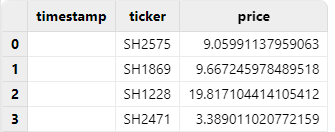
6.2. 正确操作
正确做法应该是把 timestamp 列以 LONG 类型直接导入，然后使用 replaceColumn! 和 timestamp 函数，将其手动转换为 TIMESTAMP 类型，即可得到预期结果：
t = loadText("/xxx/time.csv")
replaceColumn!(t, `timestamp, timestamp(exec timestamp from t))
t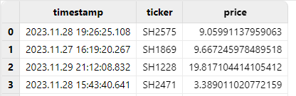
7. 长整型转换为 TIMESTAMP 类型时的时区注意事项
有的数据库在存储时间数据时，会将其转换为全球统一的 Unix 时间戳，并单独存储时区信息（即 UTC 偏移量）。 而 DolphinDB 将时间转换为本地时间戳直接存储，不会单独存储时区信息，具体可参考：时区处理。
因此，如果原始数据文件中的长整型是带时区信息的长整型，即已经加减了 UTC 偏移量的数据，导入 DolphinDB 进行转换时会被视为零时区数据处理，可能导致结果与预期不符。
如导入下面的 localtime.csv，原始结构如下：
| timestamp | ticker | price |
|---|---|---|
| 1701331200000 | SH3149 | 8.676103590987622 |
| 1701331200000 | SH0803 | 12.16052254475653 |
| 1701331200000 | SH2533 | 12.076009283773601 |
| 1701331200000 | SH3419 | 0.239130933769047 |
其中，timestamp 列应为由北京时间 2023.11.30T16:00:00.000 转换的长整型：
7.1. 错误操作
直接把 timestamp 列以 LONG 类型直接导入，然后将其手动转换为 TIMESTAMP 类型后，得到的是零时区时间，和北京时间相差 8 个小时：
t = loadText("/xxx/localtime.csv")
replaceColumn!(t, `timestamp, timestamp(exec timestamp from t))
t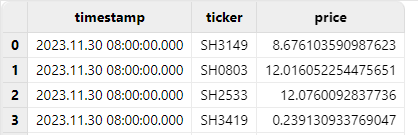
7.2. 正确操作
对于长整型转换为 TIMESTAMP 默认为零时区的现象，可以在转换类型时，利用 DolphinDB 内置的时区转换函数 localtime，把零时区时间转换成本地时间（本文测试的本地时间为东八区时间）：
t = loadText("/xxx/localtime.csv")
replaceColumn!(t, `timestamp, localtime(timestamp(exec timestamp from t)))
t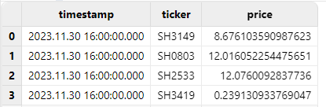
也可以利用 DolphinDB 内置时区转换函数 convertTZ，完成两个指定时区之间的转换：
t = loadText("/xxx/localtime.csv")
replaceColumn!(t, `timestamp, convertTZ(timestamp(exec timestamp from t), "UTC", "Asia/Shanghai"))
t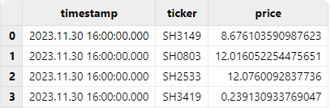
8. 使用标准格式的连接字符串连接 ODBC
通过 ODBC 插件可以连接其它数据源，将其他数据源的数据导入到 DolphinDB。在连接其他数据源时，有可能遇到报错：FATAL: password authentication failed for user "xxx"，但用户名和密码均正确，导致排查问题来源时没有头绪。许多情况下，这是因为使用的 ODBC 连接字符串有问题。有关连接字符串的标准格式，请参阅 连接字符串参考。
8.1. 错误操作
如下面的场景，使用 DSN 连接字符串连接 PostgreSQL，运行后出现报错：
odbcConfig = "DSN=PIE_PGSQL;Server="+ip+";port="+port+";DATABASE="+db+";Uid="+userName+";Password="+password+";"
conn = odbc::connect(odbcConfig)
>> FATAL: password authentication failed for user "pie_dev"Linux 版本的 ODBC 插件基于 unixODBC 开发，isql 是 unixODBC 提供的基本工具，能够快速排查 ODBC 相关问题。使用相同的 DSN 连接字符串运行 isql，出现了相同的报错：
[28P01][unixODBC]FATAL: password authentication failed for user "pie_dev"
[ISQL]ERROR: Could not SQLDriverConnect说明该问题与 DolphinDB 的 ODBC 插件无关，可能是连接字符串有问题。
8.2. 正确操作
查阅 连接字符串参考，发现 PostgreSQL 的 ODBC 标准连接字符串如下：
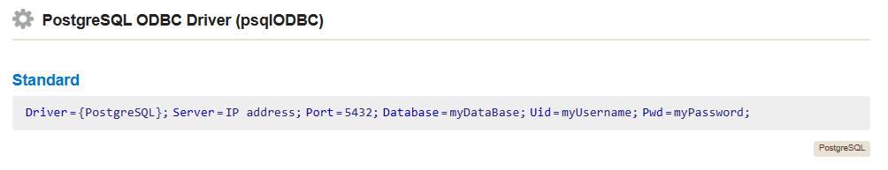
按照标准连接字符串形式，参考如下方式修改连接字符串：
odbcConfig = "Driver={PostgreSQL};Server="+ip+";port="+port+";DATABASE="+db+";Uid="+userName+";Password="+password+";"
conn = odbc::connect(odbcConfig)运行后，连接成功。
9. 同磁盘下数据解压和导入的并行处理注意事项
许多时候，用户的原始数据文件是压缩包形式的，需要先解压再进行导入。如果用户采取的是一边解压一边导入的方式，且原始数据所在磁盘与解压后存储 DolphinDB 数据库的磁盘是同一块时，会降低导入的速率。如果忽略这个细节，可能导致数据导入的耗时额外增加。
如导入下面的 mdl_6_28_0.csv，大小为 4.3 GB：
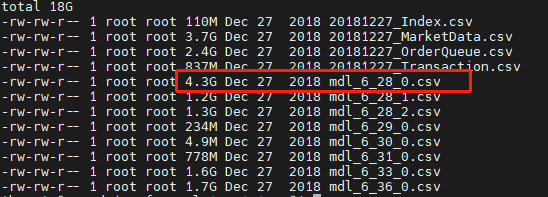
9.1. 错误操作
在该 DolphinDB 数据存储的磁盘上进行一个 .zip 文件的解压任务，同时使用 loadTextEx 函数将另一个已解压的 csv 文件入库，耗时约 1m41s：
timer loadText(database("dfs://test_load"), "data", "SecurityID", "/xxx/mdl_6_28_0.csv", sortColumns=`SecurityID`UpdateTime)
>> Time elapsed: 101156.78ms在导入过程中，观察磁盘读写速率如下：
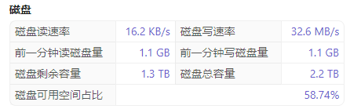
可以看到，当在同一块磁盘同时解压数据和导入数据时，数据导入的速率降低了许多。
9.2. 正确操作
磁盘空闲，没有解压任务在执行时，直接使用 loadTextEx 函数入库相同的文件，耗时约 46s：
timer loadText(database("dfs://test_load"), "data", "SecurityID", "/xxx/mdl_6_28_0.csv", sortColumns=`SecurityID`UpdateTime)
>> Time elapsed: 46203.117ms在导入过程中，观察 DolphinDB 磁盘读写速率如下：
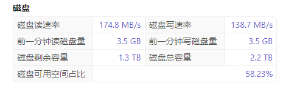
10. 避免并行写入同一分区时的冲突解决方案
在导入数据并写入分布式数据库时，有可能会存在并行写入同一分区的情况。在这种场景下，根据创建数据库时设置的 atomic 参数的不同，可能出现以下不同的情况：
- atomic 参数设置为 ’TRANS’，写入事务的原子性层级为事务，即一个事务写入多个分区时，若某个分区被其他写入事务锁定而出现写入冲突，则该事务的写入全部失败。因此，该设置下，不允许并发写入同一个分区。
- atomic 参数设置为 ’CHUNK’，写入事务的原子性层级为分区。若一个事务写入多个分区时，某分区被其它写入事务锁定而出现冲突，系统会完成其他分区的写入，同时对之前发生冲突的分区不断尝试写入，尝试数分钟后仍冲突才放弃。此设置下，允许并发写入同一个分区，但由于不能完全保证事务的原子性，可能出现部分分区写入成功而部分分区写入失败的情况。同时由于采用了重试机制，写入速度可能较慢。
当发生分区冲突导致写入失败时，将会抛出错误代码 S00002，错误信息为：<ChunkInTransaction>filepath has been owned by transaction，表示某个分区已经被一个事务锁定，新的事务无法再次锁定相同分区。如果忽略此细节，可能导致数据导入任务失败。
下面的 dfs://test_month 数据库，按月分区，且 atomic 参数为 ’TRANS’：
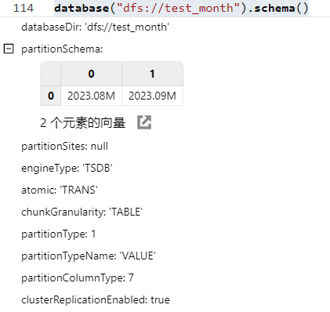
10.1. 错误操作
并行导入下面的 csv 文件入库，他们入库的目标分区都为 2023.08M：
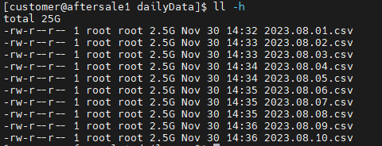
使用 submitJob 提交导入任务：
filePath = "/xxx/dailyData"
for (i in files(filePath).filename){
submitJob("loadCSVTest", "load daily files to monthly db", loadTextEx, database("dfs://test_month"), "data", "date", filePath+i)
}查看任务完成情况，可以看到，只有一个任务导入成功，别的任务都因为分区冲突而失败，抛出错误代码 S00002：
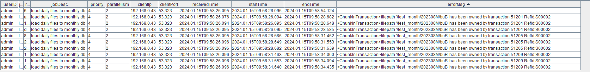
10.2. 正确操作
对于这种情况，我们可以串行导入文本文件，避免并行写入同一分区时的冲突：
def loadDaily(filePath){
for (i in files(filePath).filename){
loadTextEx(database("dfs://test_month"), "data",`date,filePath+i,sortColumns=`ID)
}
}
path = "/xxx/dailyData/"
submitJob("loadCSVTest","load daily files to monthly db",loadDaily, path)查看任务完成情况，可以看到，数据能够导入成功，没有报错：
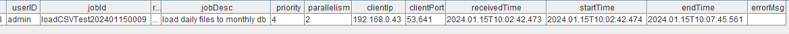
11. 总结
本文介绍了使用 DolphinDB 进行数据导入时，最容易忽略的 10 个细节，涵盖了数据格式、数据类型、导入速率、数据预处理、连接失败、分区冲突等多个方面。忽略了这些细节，可能导致数据导入失败或导入结果不符合预期。用户了解了这些细节，并合理进行数据导入，可以极大提升数据导入的速度和质量。